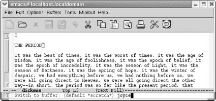
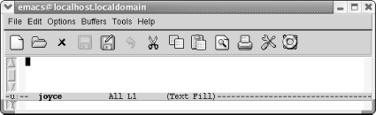
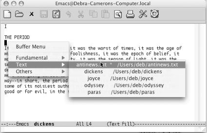

{% include JB/setup %}
{% raw %}
<div>
<div class="book" xml:lang="en"><div class="book"><div class="book"><div class="book"><h1 class="title"><a id="gnu3-CHP-4-SECT-2" class="calibre1"></a>Working with Multiple Buffers</h1></div></div></div><p class="copyright">If you want to create a
<a id="gnu3-CHP-4-ITERM-1998" class="calibre2"></a>
            <a id="gnu3-CHP-4-ITERM-1999" class="calibre2"></a>buffer that contains a file, simply type
<span><strong class="calibre5">C-x C-f</strong></span> to find the file. Emacs
automatically creates a second buffer and moves you there. If you
already have a copy of the file in a buffer, <span><strong class="calibre5">C-x C-f</strong></span> just moves you to the existing buffer.
This move is sensible and probably really what you want anyhow; if
<span><strong class="calibre5">C-x C-f</strong></span> read the file from disk
every time, you could end up with many versions of the same file that
were each slightly different. If the filename you give <span><strong class="calibre5">C-x C-f</strong></span> doesn't exist, Emacs
assumes you want to create a new file by that name and moves you to a
blank buffer.</p><div class="book" xml:lang="en"><div class="book"><div class="book"><div class="book"><h2 class="title1"><a id="gnu3-CHP-4-SECT-2.1" class="calibre1"></a>Switching Buffers</h2></div></div></div><p class="copyright">
               <span><strong class="calibre5">C-x C-f</strong></span> is always followed by a
<a id="gnu3-CHP-4-ITERM-2000" class="calibre2"></a>
               <a id="gnu3-CHP-4-ITERM-2001" class="calibre2"></a>filename. The command for moving between
buffers, <span><strong class="calibre5">C-x b</strong></span>, is followed by a
buffer name. Did you realize that the mode line
doesn't display filenames but only buffer names?
Some versions of Emacs show both, but GNU Emacs shows only the buffer
name. The buffer name and the filename, if any, are the same unless
you change them (see the section "Renaming
Buffers," later in this chapter).</p><p class="copyright">To move between the buffers, type <span><strong class="calibre5">C-x
b</strong></span>. Emacs shows you a default buffer name. Press <span><strong class="calibre5">Enter</strong></span> if that's the buffer
you want, or type the first few characters of the correct buffer name
and press <span><strong class="calibre5">Tab</strong></span>. Emacs fills in the
rest of the name. Now press <span><strong class="calibre5">Enter</strong></span> to
move to the buffer.</p><p class="copyright">You can do the following with <span><strong class="calibre5">C-x b</strong></span>:</p><div class="book"><a id="ch04-2-fm2xml" class="calibre2"></a><table class="calibre8"><colgroup class="calibre9"><col class="calibre10"/><col class="calibre10"/></colgroup><thead class="calibre11"><tr class="calibre12"><th class="calibre13">
                           <p class="copyright">
                              <span><strong class="calibre5">If you type C-x b followed by</strong></span>:</p>
                        </th><th class="calibre14">
                           <p class="copyright">
                              <span><strong class="calibre5">Emacs</strong></span>:</p>
                        </th></tr></thead><tbody class="calibre15"><tr class="calibre12"><td class="calibre16">
                           <p class="copyright">A new buffer name</p>
                        </td><td class="calibre17">
                           <p class="copyright">Creates a new buffer that isn't connected with a
file and moves there.</p>
                        </td></tr><tr class="calibre12"><td class="calibre18">
                           <p class="copyright">The name of an existing buffer</p>
                        </td><td class="calibre19">
                           <p class="copyright">Moves you to the buffer (it doesn't matter whether
the buffer is connected with a file or not).</p>
                        </td></tr></tbody></table></div><p class="copyright">If you want to create a second (or third or fourth, etc.) empty
buffer, type <span><strong class="calibre5">C-x b</strong></span>. Emacs asks for a
buffer name. You can use any name, for example, <span><strong class="calibre5">practice</strong></span>, and press <span><strong class="calibre5">Enter</strong></span>. Emacs creates the buffer and moves you
there. For example, assume you've been working on
your tried-and-true <code class="calibre21">dickens</code> buffer. But
you'd like something new, so you start a new buffer
to play with some prose from James Joyce.</p><div class="book"><a id="ch04-3-fm2xml" class="calibre2"></a><table class="calibre8"><colgroup class="calibre9"><col class="calibre10"/></colgroup><tbody class="calibre15"><tr class="calibre12"><td class="calibre17">
                           <p class="copyright">Type: <span><strong class="calibre5">C-x b joyce</strong></span>
                           </p>
                        </td></tr><tr class="calibre12"><td class="calibre17">
                           <p class="copyright">
                              </p><div class="book"><div class="mediaobject"><a id="I_4_tt114" class="calibre2"></a></div></div><p class="copyright">
                           </p>
                        </td></tr><tr class="calibre12"><td class="calibre19">
                           <p class="copyright">You typed a new buffer name.</p>
                        </td></tr></tbody></table></div><div class="book"><a id="ch04-4-fm2xml" class="calibre2"></a><table class="calibre8"><colgroup class="calibre9"><col class="calibre10"/></colgroup><tbody class="calibre15"><tr class="calibre12"><td class="calibre17">
                           <p class="copyright">Type: <span><strong class="calibre5">Enter</strong></span>
                           </p>
                        </td></tr><tr class="calibre12"><td class="calibre17">
                           <p class="copyright">
                              </p><div class="book"><div class="mediaobject"><a id="I_4_tt115" class="calibre2"></a></div></div><p class="copyright">
                           </p>
                        </td></tr><tr class="calibre12"><td class="calibre19">
                           <p class="copyright">Now you have a new buffer named <code class="calibre21">joyce</code> to type in.</p>
                        </td></tr></tbody></table></div><p class="copyright">This procedure isn't all that different from using
<span><strong class="calibre5">C-x C-f</strong></span>; about the only difference
is that the new buffer, <code class="calibre21">joyce</code>,
isn't yet associated with a file. Therefore, if you
quit Emacs, the editor won't ask you whether or not
you want to save it.</p><p class="copyright">
               <span><strong class="calibre5">C-x b</strong></span> is especially useful if you
don't know the name of the file you are working
with. Assume you're working with some obscure file
with an unusual name such as
<span><em class="calibre7">.saves-5175-pcp832913pcs.nrockv01.ky.roadrunner.com</em></span>.
Now assume that you accidentally do something that makes this buffer
disappear from your screen. How do you get
<span><em class="calibre7">.saves-5175-pcp832913pcs.nrockv01.ky.roadrunner.com</em></span>
back onto the screen? Do you need to remember the entire name or even
a part of it? No. Before doing anything else, just type <span><strong class="calibre5">C-x b</strong></span>. The default buffer is the buffer that
most recently disappeared; type <span><strong class="calibre5">Enter</strong></span> and you'll see it
again.</p><p class="copyright">Alternatively, the Buffer Menu popup
<a id="gnu3-CHP-4-ITERM-2002" class="calibre2"></a>
               <a id="gnu3-CHP-4-ITERM-2003" class="calibre2"></a>
               <a id="gnu3-CHP-4-ITERM-2004" class="calibre2"></a>lists buffers
by major mode, and you can choose one. Hold down <span><strong class="calibre5">Ctrl</strong></span> and click the left mouse button to see a
pop-up menu of your current buffers. (The Buffers menu at the top of
the screen also shows all current buffers.)</p><div class="book"><a id="ch04-5-fm2xml" class="calibre2"></a><table class="calibre8"><colgroup class="calibre9"><col class="calibre10"/></colgroup><tbody class="calibre15"><tr class="calibre12"><td class="calibre17">
                           <p class="copyright">Hold down <span><strong class="calibre5">Ctrl</strong></span> and click the left
mouse button.</p>
                        </td></tr><tr class="calibre12"><td class="calibre17">
                           <p class="copyright">
                              </p><div class="book"><div class="mediaobject"><a id="I_4_tt116" class="calibre2"></a></div></div><p class="copyright">
                           </p>
                        </td></tr><tr class="calibre12"><td class="calibre19">
                           <p class="copyright">Emacs displays a pop-up menu of current buffers by mode (Mac OS X).</p>
                        </td></tr></tbody></table></div><p class="copyright">To cycle through all the buffers you
<a id="gnu3-CHP-4-ITERM-2005" class="calibre2"></a>
               <a id="gnu3-CHP-4-ITERM-2006" class="calibre2"></a>have, type <span><strong class="calibre5">C-x</strong></span>
               <span>→</span>  to go to the
next buffer (in the buffer list) or <span><strong class="calibre5">C-x</strong></span>
 to go to the previous buffer. (Don't
hold down Ctrl while you press the arrow key or Emacs beeps
unhappily.)</p></div><div class="book" xml:lang="en"><div class="book"><div class="book"><div class="book"><h2 class="title1"><a id="gnu3-CHP-4-SECT-2.2" class="calibre1"></a>Deleting Buffers</h2></div></div></div><p class="copyright">It's easy to create buffers, and just
<a id="gnu3-CHP-4-ITERM-2007" class="calibre2"></a>
               <a id="gnu3-CHP-4-ITERM-2008" class="calibre2"></a>as
easy to delete them when you want to. You may want to delete buffers
if you feel your Emacs session is getting cluttered with too many
buffers. Perhaps you started out working on a set of five buffers and
now want to do something with another five. Getting rid of the first
set of buffers makes it a bit easier to keep things straight.
Deleting a buffer can also be a useful emergency escape. For example,
some replacement operation may have had disastrous results. You can
kill the buffer and choose not to save the changes, then read the
file again.</p><p class="copyright">Deleting a buffer doesn't delete the underlying file
nor is it the same as not displaying a buffer. Buffers that are not
displayed are still active whereas deleted buffers are no longer part
of your Emacs session. Using the analogy of a stack of pages,
deleting a buffer is like taking a page out of the current stack of
buffers you are editing and filing it away.</p><p class="copyright">Deleting buffers doesn't put you at risk of losing
changes, either. If you've changed the buffer (and
the buffer is associated with a file), Emacs asks if you want to save
your changes before the buffer is deleted. You will lose changes to
any buffers that aren't connected to files, but you
probably don't care about these buffers.</p><p class="copyright">Deleting a buffer is such a basic operation that it is on the Emacs
toolbar, the X symbol. Now let's learn how to do it
from the keyboard to increase your fluency in Emacs.</p><p class="copyright">To delete a buffer, type <span><strong class="calibre5">C-x k</strong></span> (for
<span><strong class="calibre5">kill-buffer</strong></span>). Emacs shows the name
of the buffer currently displayed; press <span><strong class="calibre5">Enter</strong></span> to delete it or type another buffer name
if the one being displayed is not the one you want to delete, then
press <span><strong class="calibre5">Enter</strong></span>. If
you've made changes that you
haven't yet saved, Emacs displays the following
message:</p><a id="I_4_tt117" class="calibre2"></a><pre class="programlisting">Buffer <em class="calibre7"><code class="calibre32">buffer name </code></em> modified. Kill anyway? (yes or no).</pre><p class="copyright">To ditch your changes, type <span><strong class="calibre5">yes</strong></span>, and
Emacs kills the buffer. To stop the buffer deletion process, type
<span><strong class="calibre5">no</strong></span>. You can then type <span><strong class="calibre5">C-x C-s</strong></span> to save the buffer, followed by
<span><strong class="calibre5">C-x k</strong></span> to kill it.</p><p class="copyright">You can also have Emacs ask you about deleting each buffer, and you
can decide whether to kill each one individually. Type <span><strong class="calibre5">M-x kill-some-buffers</strong></span> to weed out unneeded
buffers this way. Emacs displays the name of each buffer and whether
or not it was modified, then asks whether you want to kill it. Emacs
offers to kill each and every buffer, including the buffers it
creates automatically, like <code class="calibre21">*scratch*</code> and
<code class="calibre21">*Messages*</code>. If you kill all the buffers in your
session, Emacs creates a new <code class="calibre21">*scratch*</code> buffer;
after all, something has to display on the screen!</p></div></div></div>

{% endraw %}

